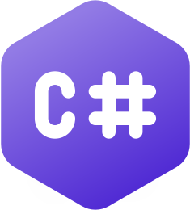

PlayerMovement| Name | Type | Modifiers | Description |
|---|---|---|---|
| _currentPattern | PlayerPattern | private [SerializeField] | Currently selected movement pattern for the player. |
| _UIIconSelectionAnimation | AnimationCurve | private [SerializeField] | Animation curve used to animate UI icon selection. |
| _playerPatternsPanel | GameObject | private [SerializeField] | UI panel containing player pattern selection icons. |
| _checkedBlocks | List<CheckedBlockBehaviour> | private | Tracks blocks currently marked as clickable. |
| _checkedBlockPositions | List<Coordinates> | private readonly | Stores candidate block positions before applying interaction scripts. |
| _patternKeyMap | Dictionary<KeyCode, PlayerPattern> | private | Maps keyboard input to player movement patterns. |
| _iconMap | Dictionary<string, RectTransform> | private | Maps pattern names to their corresponding UI icons. |
| _lastSelectedIcon | RectTransform | private | Tracks the previously selected UI icon. |
| _runningAnimations | Dictionary<RectTransform, Coroutine> | private | Keeps track of running icon animations to allow interruption. |
| Name | Parameters | Return Type | Modifiers | Description |
|---|---|---|---|---|
| CalculatePieceMoves | — | void | public override | Calculates all valid movement positions based on the current player pattern. |
| ResetClickableBlocks | — | void | public | Removes all clickable block behaviors and clears cached positions. |
| PlayMove | Coordinates blockCoordinates | void | protected | Executes a player move, handles captures, and advances match state. |
| UpdateIcons | — | void | public | Updates UI icons to reflect the currently selected movement pattern. |
| ResetPiece | — | void | public override | Resets the player piece to its pre-match position. |
| Name | Kind | Modifiers | Description |
|---|---|---|---|
| PlayerPattern | Enum | public | Defines the available movement patterns the player can switch between. |
| Name | Parameters | Return Type | Modifiers | Description |
|---|---|---|---|---|
| OnInspectorGUI | — | void | public override | Draws the custom Inspector UI for PlayerMovement, including pattern selection, UI animation references, and icon scaling logic. |
| Name | Type | Modifiers | Description |
|---|---|---|---|
| _targetTransform | Transform | private [SerializeField] | Current transform the camera orbits around. |
| _invisibleFocus | Transform | private [SerializeField] | Temporary transform used as an anchor during focus transition animations. |
| _cameraFocusChangeAnimation | AnimationCurve | private [SerializeField] | Animation curve controlling camera focus transitions. |
| _distance | float | private | Current distance between the camera and the target. |
| _minimumDistance | float | private | Minimum allowed camera distance. |
| _maximumDistance | float | private | Maximum allowed camera distance. |
| _speed | float | private | Rotation and zoom speed of the camera. |
| _orbitAngles | Vector2 | private | Vertical and horizontal orbit angles around the target. |
| Name | Parameters | Return Type | Modifiers | Description |
|---|---|---|---|---|
| Update | — | void | private | Handles camera rotation, orbiting, and zoom based on mouse input. |
| ChangeCameraFocus | Transform target, bool isInstantaneous, float newMinimumDistance, float newMaximumDistance | IEnumerator | public | Smoothly transitions the camera focus to a target transform. |
| ChangeCameraFocus | Vector3 targetPosition, bool isInstantaneous, float newMinimumDistance, float newMaximumDistance | IEnumerator | public | Smoothly transitions the camera focus to a world position. |
| MatchBoardConversionFocus | IReadOnlyList<ChunkBehaviour> matchBoard | IEnumerator | public | Centers and zooms the camera to frame an entire match board. |